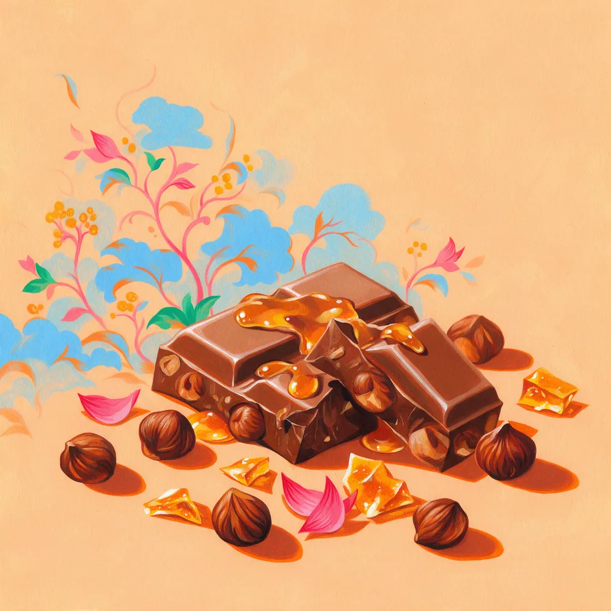
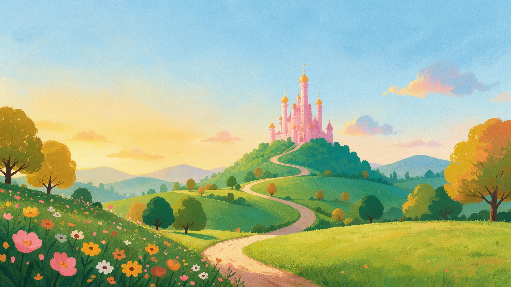
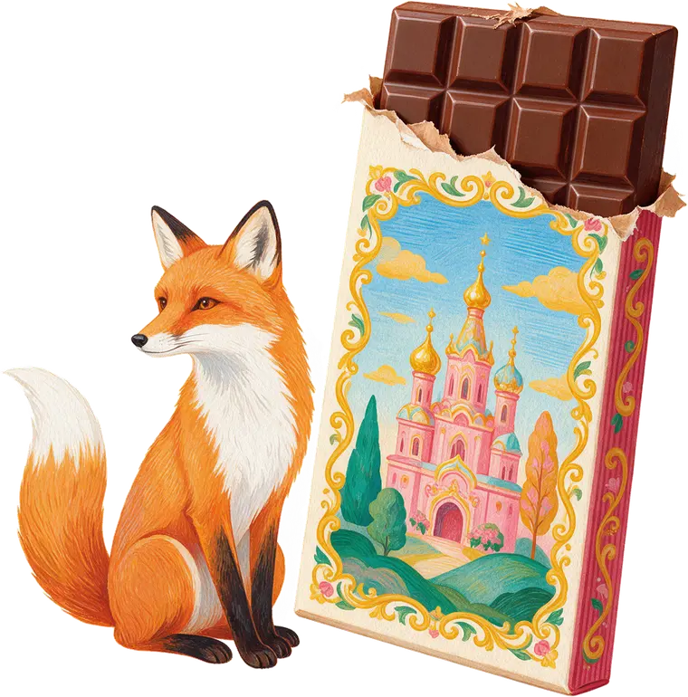
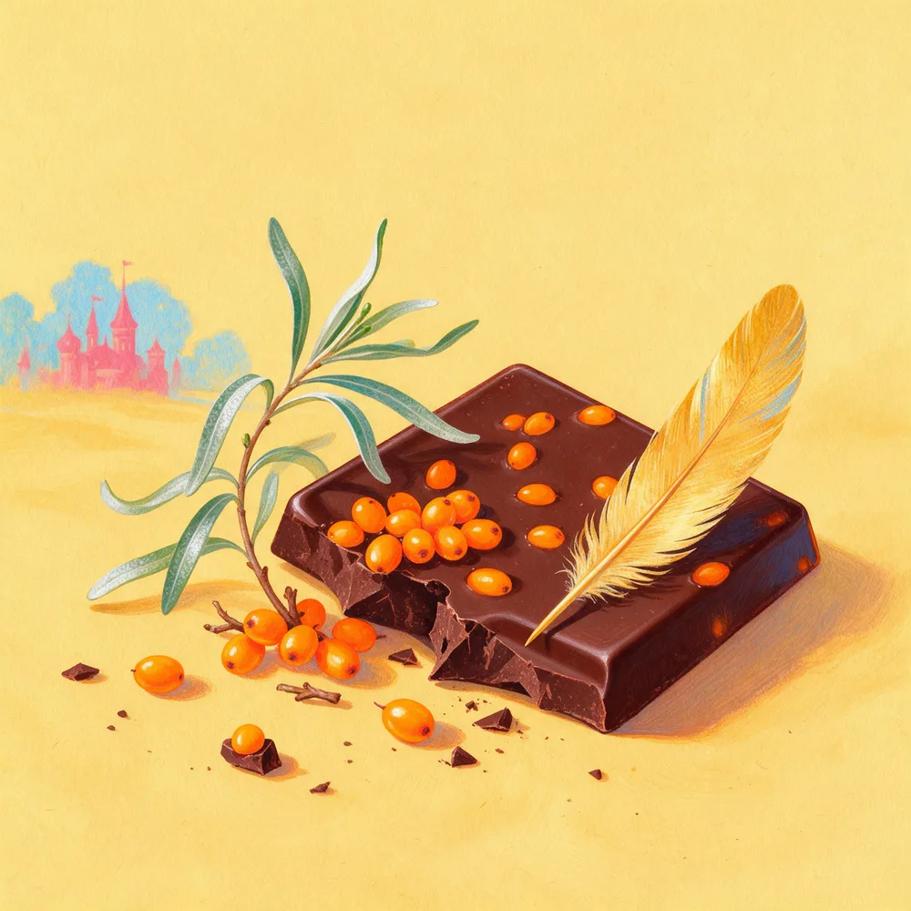
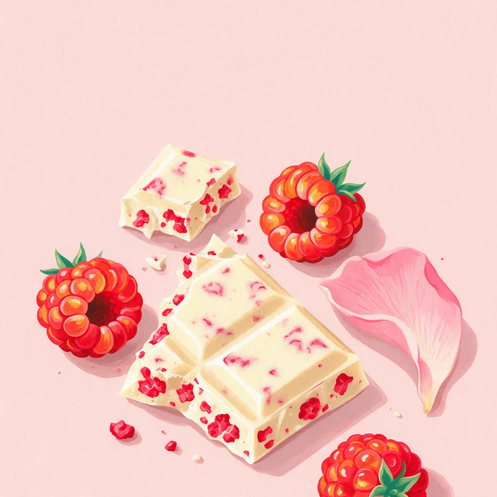
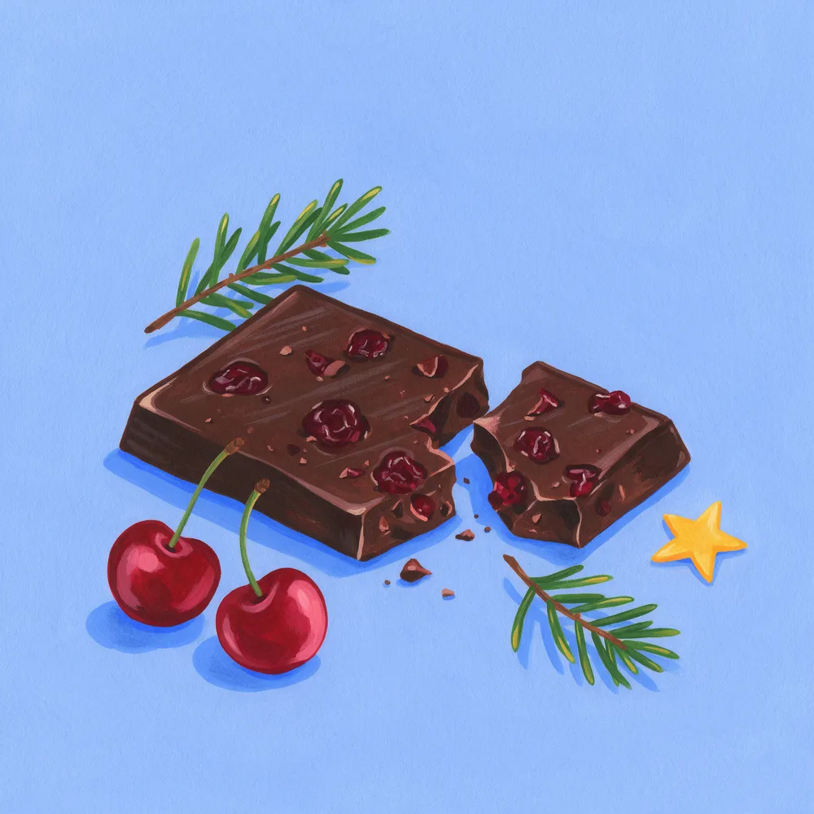
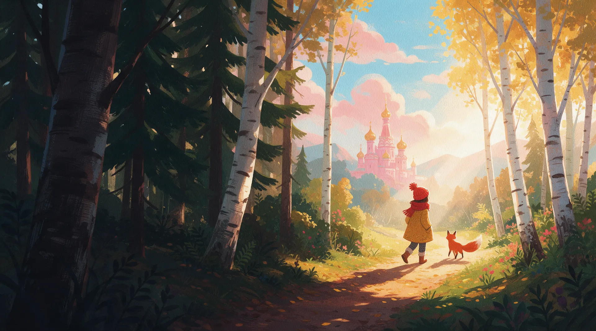
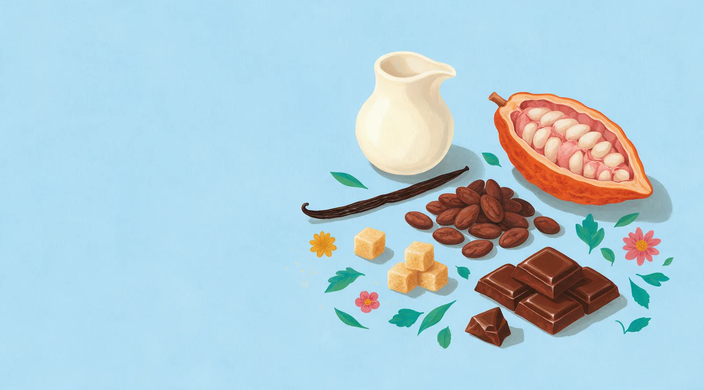
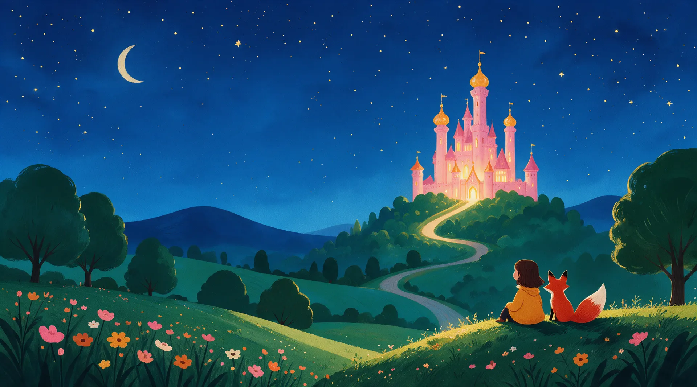

Глава первая
Лисья хитрость
Молочный шоколад, цельный фундук и капли солёной карамели.
- Вес
- {{вес}}
- Какао
- {{процент}}


Демо для Максима · по заказу «Создание одностроничного сайта»
Премиальный шоколад: четыре вкуса и одна сказка на всех.
Где купитьА по дороге – четыре вкуса. Лиса знает каждый.
У каждой плитки свой цвет, своя начинка и своя страница сказки.
На демо вкусы примерные – поставим ваши с упаковки.

Глава первая
Молочный шоколад, цельный фундук и капли солёной карамели.

Глава вторая
Тёмный шоколад с облепихой – кисло-сладкий и солнечный.

Глава третья
Белый шоколад с хрустящей малиной.

Глава четвёртая
Горький шоколад с вяленой вишней – для тех, кто не боится темноты.

Мы выросли на сказках, где лиса хитрит, а дорога всегда приводит к замку. Открываешь плитку – и на минуту снова там.
Они живут на упаковке и проведут вас по этой странице – от первой плитки до последней.

Никакого волшебства в составе – только то, из чего и должен быть шоколад.
Все четыре вкуса – на маркетплейсах и в магазинах-партнёрах.
Ищем партнёров, которым нужен шоколад-подарок с характером. Расскажем об условиях и пришлём прайс.
{{условия для партнёров: минимальная партия, доставка}}
Написать о сотрудничестве